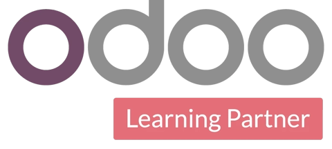

Laporan keuangan real-time
Laba rugi, neraca, dan arus kas ke-update tiap ada transaksi. Nggak nunggu rekap akhir bulan.
Mitra resmi Odoo, melayani sejak 2016
Banyak pemilik bisnis baru ngeh pembukuannya berantakan pas lagi butuh angkanya cepat buat ajukan pinjaman atau lapor pajak. Rapikan dari sekarang, bukan pas kepepet.

Implementasi oleh mitra resmi OdooKenapa HashRT
Kami setel Odoo Accounting ngikutin cara bisnis Anda mencatat sekarang, lalu otomasi bagian yang paling makan waktu: jurnal, rekonsiliasi, dan faktur pajak.
Pembukuan berantakan baru kerasa mahal pas Anda butuh angkanya cepat. Rapikan waktu masih tenang.
Cara kerja
Kita lihat cara Anda mencatat sekarang dan di mana angkanya bocor. Gratis.
Bagan akun, pajak, dan format laporan disesuaikan sama bisnis Anda.
Saldo awal dari Excel atau software lama dicocokkan sampai balance.
Closing pertama dikerjakan bareng. Tim ikut, sampai bisa jalan sendiri.
Fitur utama
Laba rugi, neraca, dan arus kas ke-update tiap ada transaksi. Nggak nunggu rekap akhir bulan.
Tiap penjualan, pembelian, dan pembayaran langsung tercatat sebagai jurnal. Lebih sedikit salah ketik, lebih sedikit koreksi.
Tarik mutasi bank, cocokkan otomatis sama catatan. Selisih ketahuan hari itu juga.
PPN kehitung otomatis. Faktur pajak siap diekspor ke e-Faktur atau Coretax.
Tiap cabang punya buku sendiri. Laporan gabungan keluar satu klik.
Satu sistem
Kata mereka
Sudah dipercaya lintas industri
Audit gratis
Chat langsung tim HashRT di WhatsApp. Ceritakan kondisi pencatatan Anda sekarang, kami tunjukin bagian yang paling rawan salah atau bocor.
· Sen–Jum 09.00–17.00 WIB
Pertanyaan yang sering muncul
Bisa. Input sehari-hari kami bikin sesederhana mengisi tabel, dan tim dilatih per peran. Bagian teknis akuntansinya sistem yang urus.
Bisa. Kami mulai dari saldo awal per tanggal cutoff yang disepakati, lalu cocokkan sampai balance. Data historis yang perlu bisa diimpor bertahap.
Odoo Accounting satu sistem dengan penjualan, pembelian, dan stok. Jurnal jalan otomatis dari transaksi, jadi tim nggak input ulang di aplikasi terpisah.
Closing pertama kami dampingi penuh. Umumnya tim mulai jalan sendiri setelah beberapa siklus bulanan, sambil kami tetap siap dihubungi.
Odoo Accounting pakai basis akuntansi standar. Bagan akun dan pajak (PPN, PPh, faktur pajak) disesuaikan aturan Indonesia. Untuk kepatuhan spesifik, kami koordinasi sama akuntan atau konsultan pajak Anda.
Audit pembukuan gratis, 30 menit, langsung lewat WhatsApp. Lihat kondisi sebenarnya sebelum kepepet.
Chat HashRT di WhatsApp· Sen–Jum 09.00–17.00 WIB